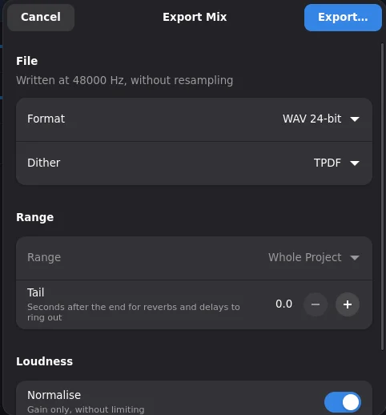

Mastering and export
Finish the record in the same session
Measure loudness the way streaming services do, compare against a finished record at the same level, and export a master, stems or a bounce.
The Loudness window
Streaming services turn loud masters down and leave quiet ones alone, so the number that matters for a release is loudness in LUFS, not peak level. Press Shift+L, or the LUFS button on the Stereo Out, and Solstice measures the mix to the ITU-R BS.1770 and EBU R128 standards while it plays.
- Momentary and Short-term loudness, for how loud it is right now.
- Integrated loudness: the whole song as one number, the one platforms normalise to.
- Loudness Range: how much the song moves between quiet and loud parts.
- True Peak: the highest level after conversion to analogue, measured with 4× oversampling. Turns red above the target's ceiling.

Below the readouts are five minutes of short-term loudness drawn against the target line, a correlation meter that goes red when the left and right channels start cancelling each other, and a spectrum in sixth-octave bands with a peak line that holds until you reset it.
| Target | Loudness | True peak ceiling |
|---|---|---|
| Streaming | −14 LUFS | −1 dBTP |
| Podcast | −16 LUFS | −1 dBTP |
| Broadcast | −23 LUFS | −1 dBTP |
| Club/CD | −9 LUFS | −0.3 dBTP |
Measurement starts afresh each time you press play from a stop, so a run-through of the chorus measures the chorus. If the computer ever falls behind and some audio goes unmeasured, the window says so, rather than showing a figure that isn't the whole story.
Compare with a finished record
The quickest way to judge a mix is against a record you love in the same genre. Drop the song onto an audio track, right-click the track header and choose Use as Reference Track. It's then kept out of the mix entirely: it plays straight to your speakers, and never reaches a bus, an export or a stem.
Press O, or the Reference button, to swap between your mix and the reference with a short crossfade. With Match Levels on, Solstice measures the reference's loudness and turns it to match your mix, so you're comparing tone and balance, not which one is louder. The Loudness window shows both: "Mix −14.0 LUFS, Reference −9.0 LUFS (−5.0 dB)".
Mastering in the same session
There's no separate mastering project to set up. The Stereo Out has its own Channel EQ and inserts, so the master chain lives in the mix it's finishing: the Mix Bus setting loads glue compression, gentle saturation and a safety limiter in one go, and the Limiter has Transparent Master and Loud Master presets. The D (Dim) button drops the monitoring 20 dB for a phone call without touching the fader, and never affects an export.
Exporting the mix
Ctrl+B, or the Exp button on the Stereo Out, opens Export Mix. Solstice renders faster than real time, with a progress bar and Cancel.
- Format: WAV at 16 or 24-bit or 32-bit float, or FLAC at 16 or 24-bit, at the project's sample rate.
- Dither: TPDF, or TPDF with noise shaping, when reducing to 16 or 24-bit.
- Range: the whole song, or just the cycle, with up to 10 seconds of tail for the reverb to ring out.
- Normalise to one of the loudness targets. It's gain only, never limiting, and backs off if the true peak would pass the ceiling.
Every export reports the loudness and true peak it came out at, normalised or not: "Exported at −14.0 LUFS, −1.2 dBTP".

Stems
File ▸ Export Stems… writes each track and bus on its own, at its level in the mix, into a folder you pick, named "Song - Kick.wav", "Song - Drums.wav" and so on. It's the way to hand a mix to another engineer, or to a mastering studio that wants stems.
Bounce in place and freeze
Bounce in Place renders the selected regions through their track's plug-ins onto a new audio track and mutes the originals, to commit an amp tone or print a synth part.
Freeze Track renders a track's instrument and plug-ins to audio and plays that instead, freeing the processor while keeping everything editable. Fader, pan, sends and mute stay live. Edit its regions, add or remove a plug-in, or change the tempo, and the track unfreezes itself.